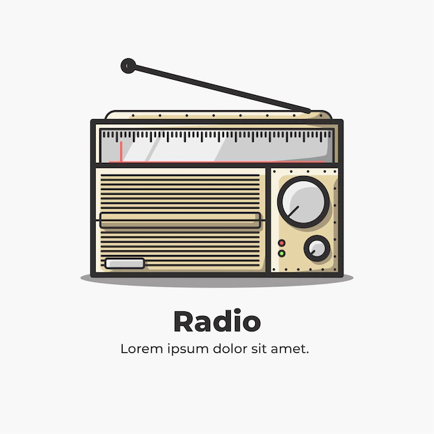

favoritos


|  | |||||
| cantantes famosos | Noticias | Peliculas | |||
|---|---|---|---|---|---|
| Enrique Miguel Iglesias Preysler (Madrid, 8 de mayo de 1975) es un cantante, compositor, productor discográfico y actor español. Es hijo del cantante Julio Iglesias y de Isabel Preysler. | |||||
| Shakira Isabel Mebarak Ripoll (Barranquilla, Atlántico, Colombia; 2 de febrero de 1977), es una cantautora, bailarina, actriz, embajadora de buena voluntad de UNICEF y empresaria colombiana naturalizada española. | |||||
| Paulina Susana Rubio Dosamantes[1] (Ciudad de México, 17 de junio de 1971)[2] es una cantante, actriz, modelo y empresaria mexicana. Es apodada como La Chica Dorada. | |||||
|
Enrique Martín Morales (San Juan, 24 de diciembre de 1971), conocido popularmente por el nombre artístico de Ricky Martin, es un cantante y actor puertorriqueño nacionalizado posteriormente español.[6] Inició su carrera musical a mediados de la década de los 80, como vocalista del grupo juvenil Menudo y a partir de 1991 se estableció como solista. Ha lanzado nueve álbumes de estudio, tres recopilaciones y más de cincuenta sencillos en español e inglés. | |
|||